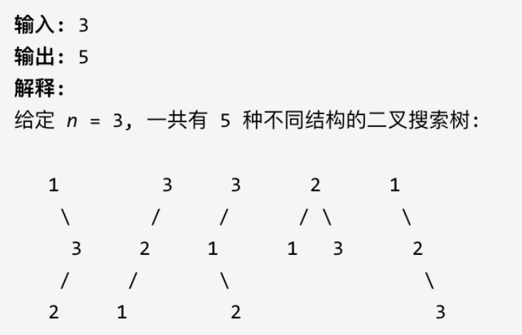
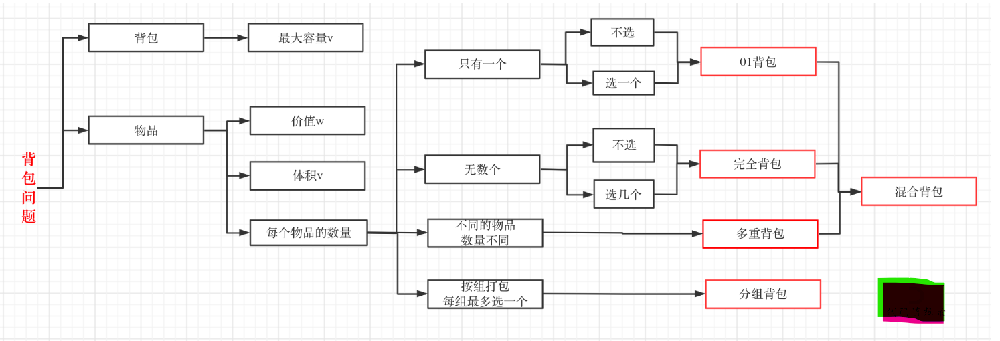

动态规划
动态规划中每一个状态一定是由上一个状态推导出来的，这一点就区分于贪心，贪心没有状态推导，而是从局部直接选最优的。
做动规的题目，写代码之前一定要把状态转移在dp数组上具体情况模拟一遍，心中有数，确定最后推出的是想要的结果。
动态规划的步骤：
- 确定dp数组（dp table）以及下标的含义
- 确定递推公式
- dp数组如何初始化
- 确定遍历顺序
- 举例推导dp数组
斐波那契数
描述：
1 | 斐波那契数，通常用 F(n) 表示，形成的序列称为 斐波那契数列 。该数列由 0 和 1 开始，后面的每一项数字都是前面两项数字的和。也就是： F(0) = 0，F(1) = 1 F(n) = F(n - 1) + F(n - 2)，其中 n > 1 给你n ，请计算 F(n) 。 |
示例：
1 | 示例 1： |
思路：
- 确定dp数组以及下标的含义
dp[i]的定义为：第i个数的斐波那契数值是dp[i]
- 确定递推公式
题目已经把递推公式直接给我们了：状态转移方程 dp[i] = dp[i - 1] + dp[i - 2];
- dp数组如何初始化
dp[0] = 0; dp[1] = 1;
- 确定遍历顺序
从递归公式dp[i] = dp[i - 1] + dp[i - 2];中可以看出，dp[i]是依赖 dp[i - 1] 和 dp[i - 2]，那么遍历的顺序一定是从前到后遍历的
- 举例推导dp数组
解法：
1 | var fib = function(n){ |
爬楼梯
描述：
1 | 假设你正在爬楼梯。需要 n 阶你才能到达楼顶。每次你可以爬 1 或 2 个台阶。你有多少种不同的方法可以爬到楼顶呢？ |
示例：
1 | 示例 1： |
思路：
dp[i] = dp[i-1]+dp[i-2]
解法：
1 | var climbStairs = function(n){ |
使用最小花费爬楼梯
描述：
1 | 数组的每个下标作为一个阶梯，第 i 个阶梯对应着一个非负数的体力花费值 cost[i]（下标从 0 开始）。每当你爬上一个阶梯你都要花费对应的体力值，一旦支付了相应的体力值，你就可以选择向上爬一个阶梯或者爬两个阶梯。 |
示例：
1 | 示例 1： |
思路：
dp[i] = Math.min(dp[i-1]+cost[i-1], dp[i-2]+cost[i-2])
dp[0]=0, dp[1]=0;
解法：
1 | var minCostClimbingStairs = function(cost){ |
不同路径
描述：
1 | 一个机器人位于一个 m x n 网格的左上角 （起始点在下图中标记为 “Start” ）。 |
示例：
1 | 示例 1： |
思路：
机器人从(0 , 0) 位置出发，到(m - 1, n - 1)终点。
按照动规五部曲来分析：
- 确定dp数组（dp table）以及下标的含义
dp[i] [j]：表示从（0 ，0）出发，到(i, j) 有dp[i] [j]条不同的路径。
- 确定递推公式
想要求dp[i] [j]，只能有两个方向来推导出来，即dp[i - 1] [j] 和 dp[i] [j - 1]。
此时在回顾一下 dp[i - 1] [j] 表示啥，是从(0, 0)的位置到(i - 1, j)有几条路径，dp[i] [j - 1]同理。
那么很自然，dp[i] [j] = dp[i - 1] [j] + dp[i] [j - 1]，因为dp[i] [j]只有这两个方向过来。
- dp数组的初始化
如何初始化呢，首先dp[i] [0]一定都是1，因为从(0, 0)的位置到(i, 0)的路径只有一条，那么dp[0] [j]也同理。
所以初始化代码为：
1 | for (int i = 0; i < m; i++) dp[i][0] = 1; |
- 确定遍历顺序
这里要看一下递推公式dp[i] [j] = dp[i - 1] [j] + dp[i] [j - 1]，dp[i] [j]都是从其上方和左方推导而来，那么从左到右一层一层遍历就可以了。
这样就可以保证推导dp[i] [j]的时候，dp[i - 1] [j] 和 dp[i] [j - 1]一定是有数值的。
- 举例推导dp数组
解法：
1 | var uniquePaths = function(m, n){ |
不同路径II
描述：
1 | 一个机器人位于一个 m x n 网格的左上角 （起始点在下图中标记为“Start” ）。 |
示例：
1 | 输入：obstacleGrid = [[0,0,0],[0,1,0],[0,0,0]] |
思路：
(i, j)如果就是障碍的话应该就保持初始状态（初始状态为0）。
这个题的易错点有两个：
- 设置初始值的时候，行列中只要有任意一个是障碍物，那这个障碍物后续的格子都无法到达。且数组初始值为0。
- dp的时候，如果碰到障碍物那么当前格子就应该设置为0，否则使用公式
解法：
1 | var uniquePathsWithObstacles = function(obstacleGrid){ |
整数拆分
描述：
1 | 给定一个正整数 n，将其拆分为至少两个正整数的和，并使这些整数的乘积最大化。 返回你可以获得的最大乘积。 |
示例：
1 | 示例 1: |
思路：
dp[i]：拆分数字i，可以得到的最大乘积为dp[i]。
有两种渠道得到dp[i]。一个是j * (i - j) 直接相乘。一个是j * dp[i - j]，相当于是拆分(i - j)。
dp[i] = max(dp[i], max((i - j) * j, dp[i - j] * j));
在取最大值的时候，为什么还要比较dp[i]呢？
因为在j循环中，每次dp[i]都会改变，需要记录dp[i]的最大值。
解法：
1 | var intergerBreak = function(n){ |
不同的二叉搜索树
描述：
1 | 给定一个整数 n，求以 1 ... n 为节点组成的二叉搜索树有多少种？ |
示例：

思路：
**dp[i] ： 1到i节点组成的二叉搜索树的个数为dp[i]**。
dp[i] += dp[以j为头结点左子树节点数量] * dp[以j为头结点右子树节点数量]
dp[i] += dp[j - 1] * dp[i - j]; j-1 为以j为头结点左子树节点数量，i-j 为以j为头结点右子树节点数量
1 | dp[3]，就是 元素1为头结点搜索树的数量 + 元素2为头结点搜索树的数量 + 元素3为头结点搜索树的数量 |
解法：
1 | var numTrees = function(n){ |
背包问题基础
只需要掌握01背包和完全背包即可

01背包问题—二维数组
描述：
1 | 有n件物品和一个最多能背重量为w 的背包。第i件物品的重量是weight[i]，得到的价值是value[i] 。每件物品只能用一次，求解将哪些物品装入背包里物品价值总和最大。 |
思路：
dp[i] [j] 表示从下标为[0-i]的物品里任意取，放进容量为j的背包，价值总和最大是多少。
解法：
1 | var testWeightBagProblem = function(weight, value, size){ |
01背包问题—一维数组
需要满足的条件是上一层可以重复利用，直接拷贝到当前层
思路：
dp[j]表示：容量为j的背包，所背的物品价值可以最大为dp[j]。
1 | dp[j] = max(dp[j], dp[j - weight[i]] + value[i]); |
遍历顺序：
1 | for(int i = 0; i < weight.size(); i++) { // 遍历物品 |
二维dp遍历的时候，背包容量是从小到大，而一维dp遍历的时候，背包是从大到小。倒序遍历是为了保证物品i只被放入一次！。但如果一旦正序遍历了，那么物品0就会被重复加入多次！从后往前循环，每次取得状态不会和之前取得状态重合，这样每种物品就只取一次了。
代码中不可以先遍历背包容量嵌套遍历物品。因为一维dp的写法，背包容量一定是要倒序遍历（原因上面已经讲了），如果遍历背包容量放在上一层，那么每个dp[j]就只会放入一个物品，即：背包里只放入了一个物品。
解法：
1 | var testWeightBagProblem = function(weight, value, size){ |
分割等和子集
描述：
1 | 给定一个只包含正整数的非空数组。是否可以将这个数组分割成两个子集，使得两个子集的元素和相等。 |
示例：
1 | 示例 1: |
思路：
元素只能使用一次，故是01背包问题。
只有确定了如下四点，才能把01背包问题套到本题上来。
- 背包的体积为sum / 2
- 背包要放入的商品（集合里的元素）重量为 元素的数值，价值也为元素的数值
- 背包如果正好装满，说明找到了总和为 sum / 2 的子集。
- 背包中每一个元素是不可重复放入。
本题中，**dp[j]表示 背包总容量是j，最大可以凑成j的子集总和为dp[j]**。递推公式：dp[j] = max(dp[j], dp[j - nums[i]] + nums[i]);
如果题目给的价值都是正整数那么非0下标都初始化为0就可以了，如果题目给的价值有负数，那么非0下标就要初始化为负无穷。
解法：
1 | var canPartition = function(nums){ |
相似的题目：
- 整数拆分、不同的二叉搜索树